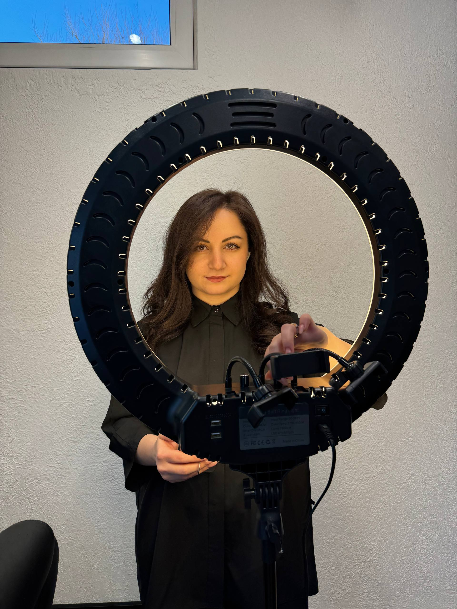

Обо мне
Я мастер по окрашиванию и стрижкам, который работает с женскими волосами бережно, внимательно и с упором на красивый, чистый результат.
Основное направление моей работы — окрашивание волос, блонд, сложные техники осветления, тонирование и выход из нежелательных оттенков. Для меня важно не просто сделать цвет, а создать результат, который выглядит дорого, естественно и подходит именно вам.
Каждая работа начинается с анализа: состояние волос, плотность, длина, история предыдущих окрашиваний, оттенок базы и желаемый итог. Это помогает подобрать правильную стратегию и сохранить качество волос.
Я придерживаюсь принципа аккуратного и осознанного окрашивания — когда важен не только эффект сразу после процедуры, но и то, как волосы будут выглядеть через время.
Работаю в камерной студии «Хижина красоты» — в спокойном пространстве, где можно сосредоточиться на результате, деталях и комфорте.

Мой подход
Для меня важно, чтобы после визита волосы выглядели не только красиво, но и живо: с блеском, формой и качеством, которое хочется сохранить.